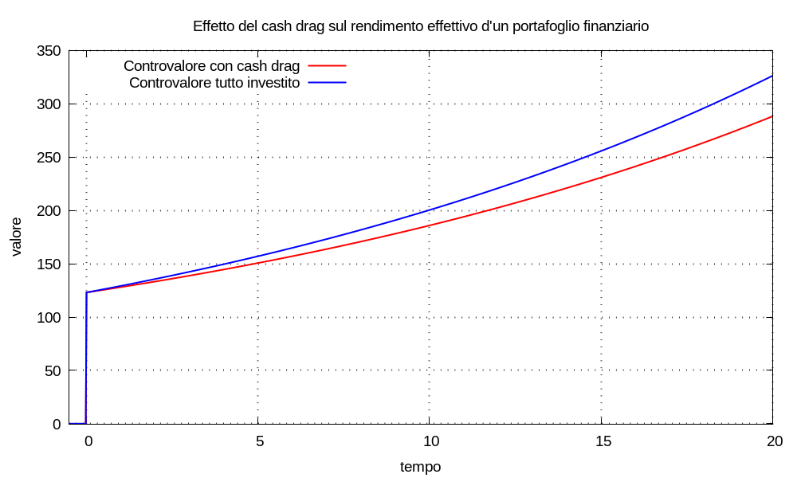

Significa: minore rendimento ottenuto al termine d’un periodo d’investimento, perché invece d’investire s’è mantenuta una quantità di capitale in banconote oppure in crediti bancari giacenti s’un deposito non remunerato.
Immaginiamo d’impiegare il capitale Cinvesto in un investimento che simuliamo con un multimetro di remunerazione λinvesto; il controvalore risulta:
Uinvesto(t) = Cinvesto u(t - tinvesto) esp[λinvesto (t - tinvesto)]
Immaginiamo d’impiegare il capitale Cgiacente in banconote giacenti nel portafogli oppure in crediti bancari giacenti s’un conto deposito non remunerato; simuliamo quest’impiego con un multimetro inerte, λgiacente = log1p(0) = 0; il controvalore risulta:
Ugiacente(t) = Cgiacente u(t - tgiacente) esp[λgiacente (t - tgiacente)] = Cgiacente u(t - tgiacente)
Il controvalore è una grandezza estensiva, quindi il totale risulta:
U(t) = Uinvesto(t) + Ugiacente(t)
In un futuro alternativo: immaginiamo d’impiegare lo stesso capitale Cgiacente nello stesso investimento con remunerazione λinvesto; il controvalore alternativo risulta:
Ualterno(t) = Cgiacente u(t - tinvesto) esp[λinv (t - tinvesto)]
Il totale alternativo risulta:
V(t) = Uinvesto(t) + Ualterno(t)
Esempio Eseguiamo la simulazione con: Cinvesto = 100, λinvesto = log1p(3%), Cgiacente = 23.
